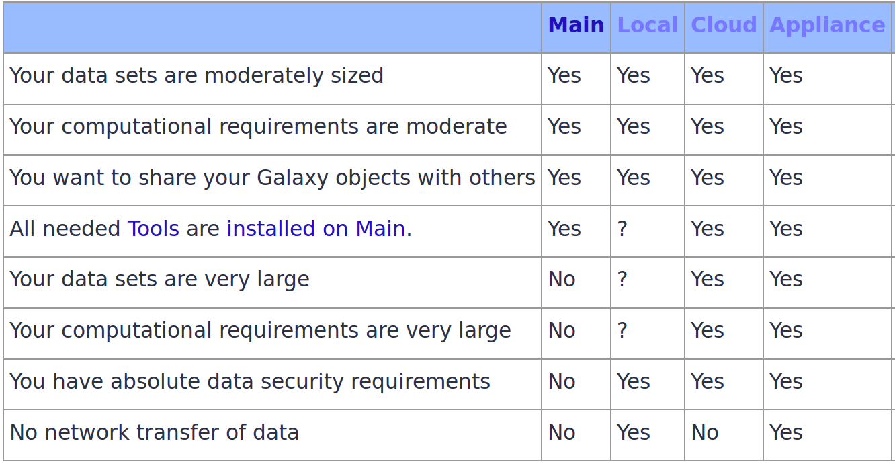
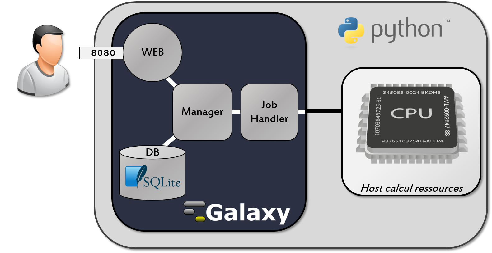
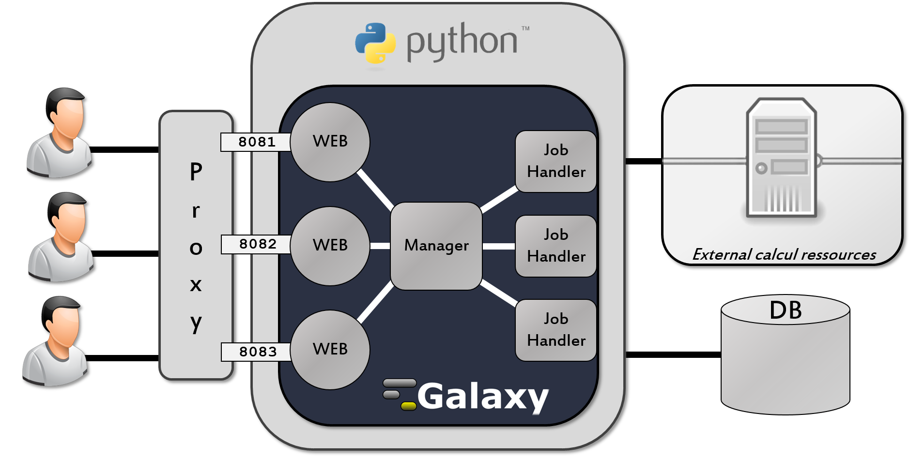

<!doctype html>
<html lang="en">

	<head>
		<meta charset="utf-8">

		<title>Galaxy Server administration</title>

		<link rel="stylesheet" href="../../assets/reveal.js/css/reveal.css">
		<link rel="stylesheet" href="../../assets/reveal.js/css/theme/simple.css" id="theme">

		<!-- Code syntax highlighting -->
		<link rel="stylesheet" href="../../assets/reveal.js/lib/css/zenburn.css">

		<link rel="stylesheet" href="../../assets/css/slide_custom.css" id="theme">

		<!-- Printing and PDF exports -->
        <script>
          if( window.location.search.match( /print-pdf/gi ) ) {
            var link = document.createElement( 'link' );
            link.rel = 'stylesheet';
            link.type = 'text/css';
            link.href = '../../assets/reveal.js/css/print/pdf.css';
            document.getElementsByTagName( 'head' )[0].appendChild( link );
          }
        </script>
		<!--<script>
            if (window.location.search.match(/print-pdf/gi)) {
                document.write('<link rel="stylesheet" href="css/pdf.css" type="text/css">');
            }
        </script>-->

		<!--[if lt IE 9]>
        <script src="../../assets/reveal.js/lib/js/html5shiv.js"></script>
        <![endif]-->
	</head>

	<body>
		<div class="reveal">
            <div class="slides">
                <section data-markdown>
                    <script type="text/template">
                        ## Welcome!

                        

                        The easiest way to **navigate** this slide deck
                        is **by hitting `[space]` on your keyboard**

                        You can also navigate with arrow keys, but be careful because some
                        slides can be nested inside of each other (vertically)
                    </script>
                </section>

                <section data-markdown>
                    <script type="text/template">
                        # Galaxy Server administration
                    </script>
                </section>
		
                <section data-markdown>
	                  <script type="text/template">
                        ## Requirement
                        [General introduction about Galaxy](../../Introduction/slides/index.html)
                    </script>
		            </section>
            
                <section>
                    <section data-markdown>
                        <script type="text/template">
                            ## Galaxy is available in several different ways 
                        </script>
                    </section>

                    <section data-markdown>
                        <script type="text/template">
                            ###  Several different ways

                            - [Main](http://usegalaxy.org/) and [others](https://wiki.galaxyproject.org/PublicGalaxyServers) free public servers
                            - Run your [local instance](https://wiki.galaxyproject.org/Admin/GetGalaxy) or a [docker](https://github.com/bgruening/docker-galaxy-stable) image
                            - Use Galaxy on the [Cloud](https://wiki.galaxyproject.org/Cloud)
                            - Get the SlipStream [Galaxy Appliance](https://bioteam.net/products/galaxy-appliance/)
                        </script>
                    </section>


                    <section data-markdown>
                        <script type="text/template">
                            ### Which option to choose ?

                            <a href="https://wiki.galaxyproject.org/BigPicture/Choices">
                                
                            </a>
                        </script>
                    </section>
                </section>

                <section>
                    <section data-markdown>
                        <script type="text/template">
                            ## Galaxy Locally
                        </script>
                    </section>

                    <section data-markdown>
                        <script type="text/template">
                            ### Reasons to Install Your Own Galaxy
                            - You want to run a local [production Galaxy](https://wiki.galaxyproject.org/Admin/Config/Performance/ProductionServer) 
                            - You want to develop [Galaxy tools](https://wiki.galaxyproject.org/Admin/Tools/AddToolTutorial)
                            - You to [Develop Galaxy](https://wiki.galaxyproject.org/Develop) itself
                        </script>
                    </section>
                    
                    <section data-markdown>
	                      <script type="text/template">
                            ### Requirements
                            - UNIX/Linux or Mac OS X (or [Windows](https://wiki.galaxyproject.org/Admin/Config/Windows))
                            - Python 2.7
                            - Git (optional)
                            - GNU Make, gcc to compile and install tool dependencies
                            - Additional tool requirements as detailed in [Tool Dependencies](https://wiki.galaxyproject.org/Admin/Tools/ToolDependencies)
                        </script>
		                </section>   
                </section> 

                <section>
                    <section data-markdown>
                        <script type="text/template">
                            ## Galaxy in production
                        </script>
                    </section>
                    
                    <section data-markdown>
                        <script type="text/template">
                            ## Reasons to install Galaxy in production
                            - [install](https://wiki.galaxyproject.org/Admin/Tools/AddToolTutorial) and use tools unavailable on [public Galaxies](https://wiki.galaxyproject.org/PublicGalaxyServers)
                            - use sensitive data (e.g. clinical) 
                            - process large datasets that are too big for public Galaxies 
                            - [plug-in](https://wiki.galaxyproject.org/Admin/Internals/DataSources) new datasources 
                        </script>
                    </section>
                    
                    <section data-markdown>
	                      <script type="text/template">
                            ### By default Galaxy
                            <!-- - Uses SQLite
                            - Uses a built-in HTTP Server
                            - Runs all tools locally
                            - Runs in a single process --> 
                            
                        </script>
                    </section>
                    
                    <section data-markdown>
      	                <script type="text/template">
                           ### Galaxy in production, basic configuration
                           <!-- - Switching to a database server
                           - Using a proxy server
                           - Using a compute cluster -->
                           
                        </script>
                    </section>
            		</section>

            		<section>
                    <section data-markdown>
                        <script type="text/template">
                            ### What's next ?
                            - You want to intall Galaxy locally ?
                            - And You want to configure Galaxy for production ?
                        </script>
                    </section>
                
                    <section data-markdown>
                      <script type="text/template">
                            ### See the tutorial:
                            #### ["Move from dev instance to production instance"](dev_to_production.html)
                            
                        </script>
                    </section>
                </section>

                <section data-markdown>
                    <script type="text/template">
                        ### Tutorials
                        - [Move from dev instance to production instance](dev_to_production.html)
                        - ['10 rules' for Setting up a Galaxy Instance as a Service](10rules_for_GaaS.html)
                        - [Galaxy and Docker](galaxy_docker.html)
                        - [Galaxy Database schema](database_schema.html)
                    </script>
                </section>
			      </div>
		</div>

		<script type="text/javascript" src="../../assets/reveal.js/lib/js/head.min.js"></script>
        <script type="text/javascript" src="../../assets/reveal.js/js/reveal.js"></script>
        <script type="text/javascript">
            Reveal.initialize({
                slideNumber: !window.location.search.match(/print-pdf/gi),
                history: true,

                theme: Reveal.getQueryHash().theme,
                transition: Reveal.getQueryHash().transition || 'concave',

                dependencies: [
                    { src: '../../assets/reveal.js/lib/js/classList.js', condition: function() { return !document.body.classList; } },
                    { src: '../../assets/reveal.js/plugin/markdown/marked.js', condition: function() { return !!document.querySelector( '[data-markdown]' ); } },
                    { src: '../../assets/reveal.js/plugin/markdown/markdown.js', condition: function() { return !!document.querySelector( '[data-markdown]' ); } },
                    { src: '../../assets/reveal.js/plugin/highlight/highlight.js', async: true, callback: function() { hljs.initHighlightingOnLoad(); } },
                    { src: '../../assets/reveal.js/plugin/notes/notes.js', async: true },
                ]
            });
        </script>

	</body>
</html>
